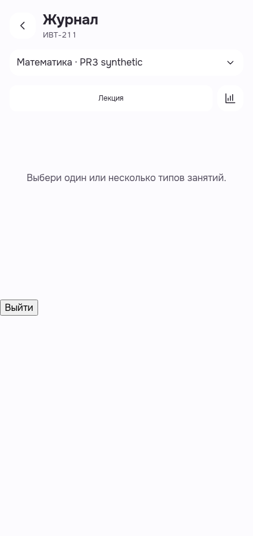
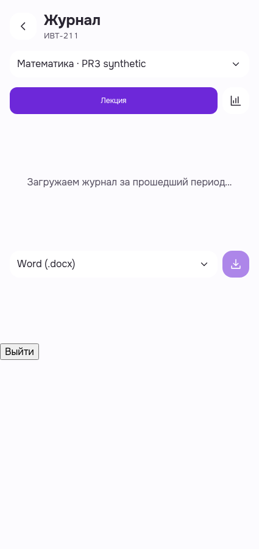
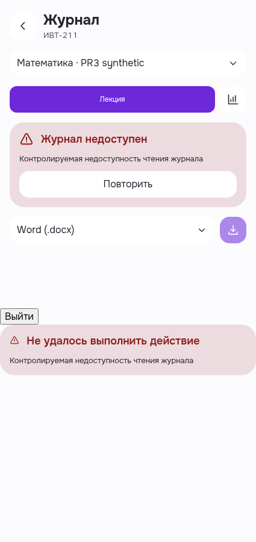
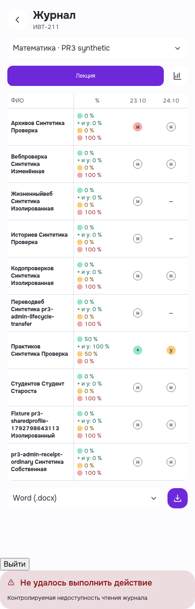
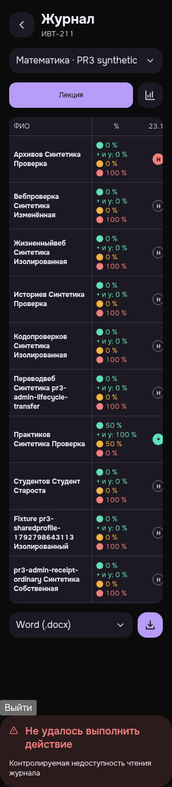
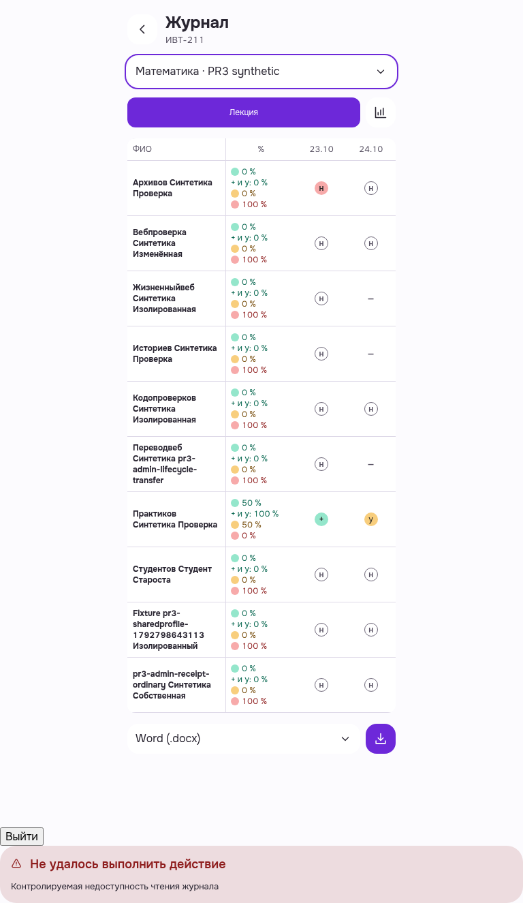

Original driver exit1/cookie-guard failure retained. Root exact-own cleanup independently qualified and browser/context closed through reviewed terminal proof. Same-URL real200 recovery observed; stale global error remains. No false native204, whole-screen readiness or new functional actions.
Actual Journal entry: group and synthetic subject readable; no type selected; truthful selection explanation; Back visible at425light.

Same GET HELD before and after screenshot, no watchdog expiry; loading is visible as a plain caption, without visual skeleton/progress. Export controls shown; no command invoked.

One explicitly controlled503 renders local Journal unavailable + Retry. A second global error warning appears below; no fake successful data.

Same-URL real200/UI retry renders populated table with two lesson dates and synthetic students; local Journal error cleared. Global unavailable warning remains stale below the table.

300dark retains readable header/type/row names and metrics; document width300. Table extends within the source scroll container; scroll interaction was not performed. Stale global error remains.

768light uses centered journal canvas and readable two-date table. Purple focus ring is fully visible around Subject selector after Tab. Stale global warning remains full-width below.
